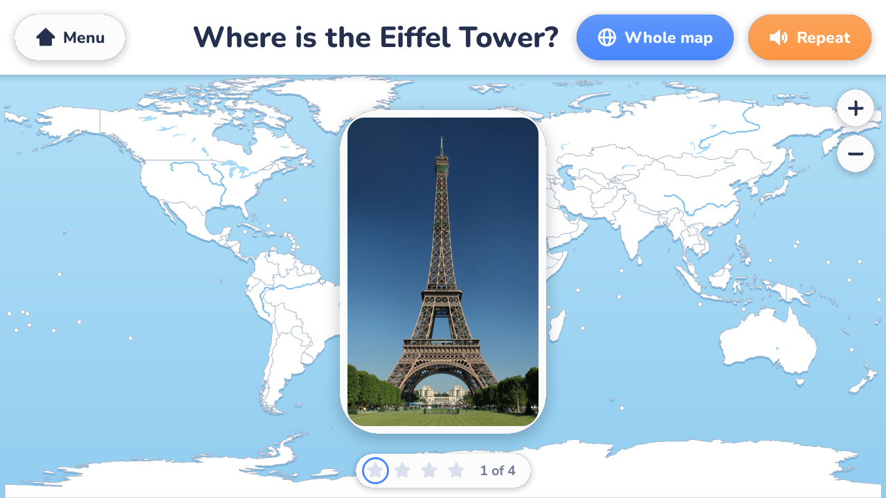
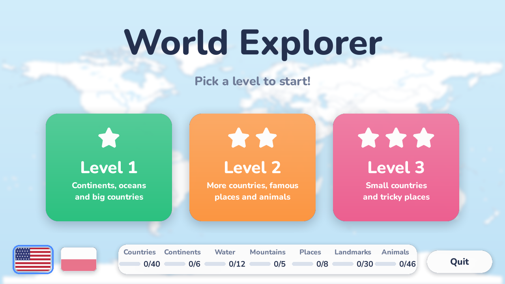
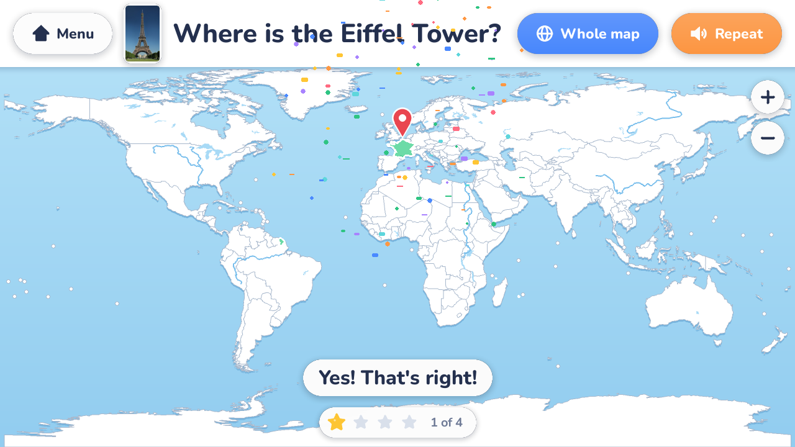
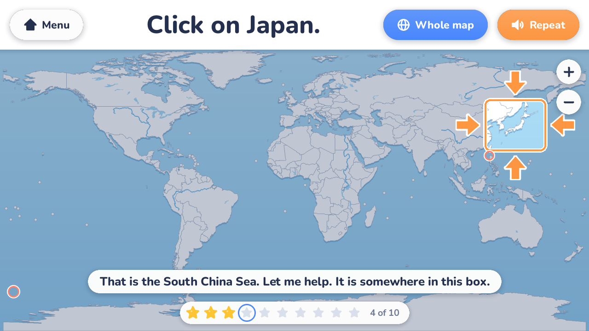

A geography game for young children. The game asks out loud, the child clicks the map. Nobody can lose.
Free and open source. Works offline. English and Polish.

Countries, continents, oceans, mountains and rivers, on three levels from easy to tricky.
"Where do giraffes live?" Every animal comes with a photo; any place it really lives counts.
The pyramids, the Eiffel Tower, Machu Picchu, Wawel Castle. A pin shows the exact spot once found.
Every question and every answer is spoken, in English or Polish. Pick the language with a flag.
A wrong click names what was clicked. After two misses a box shows where to look; after three the answer glows.
The game counts what has been found so far: countries 12 of 40, animals 3 of 46, and so on.



WorldExplorer.exe and start it. There is nothing to install.The program is not signed, so Windows may show a "Windows protected your PC" notice or an antivirus warning the first time. Choose "More info" and "Run anyway" if you trust it, or run the game from the source code instead: the steps are in the README.